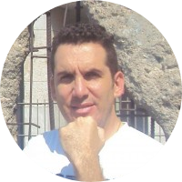

|  | Roberto Carlos TIERNO🦾 Biomedical Engineer 🦿 Medical Device and Health Technology Management Specialist |
BIORAD MEDICAL SERVICES CEO & Founder. Actually working as Technical Director of LEADER LIFE Hiperbaric Chambers in Cali, Colombia. Director of Engineering Degree Projects at the Universidad Autónoma de Occidente. Also working in Biomedical Instrumentation for America de Cali Football Club.
Now researching as Full Stack Web Developer to bring to life new Health and Clinical Solutions in Biomedical Engineering
I received my Bachelor's Degree in Electronics in 1996. Then I studied Computer Science and then I received my Biomedical Engineering degree. In 2016, I graduated as Specialist in Medical Device and Health Technology Management in Universidad Autónoma de Occidente.
Skills |
|||||||||||||||||||||
|---|---|---|---|---|---|---|---|---|---|---|---|---|---|---|---|---|---|---|---|---|---|
|
|